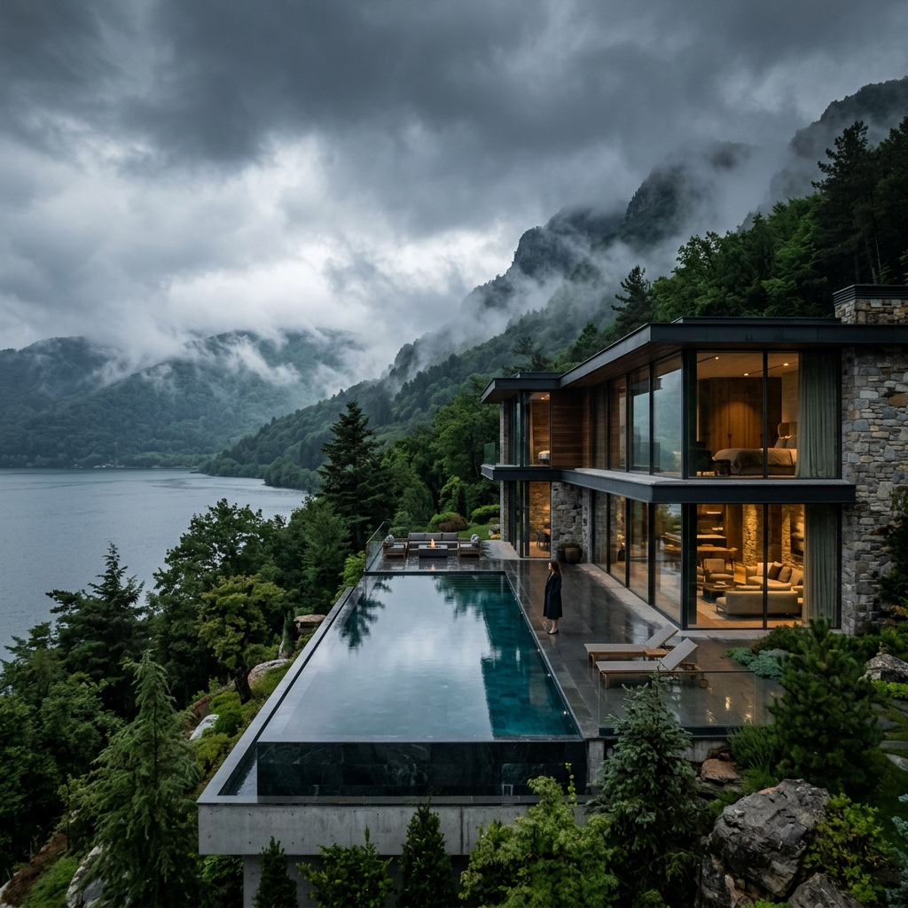

The Green North · Turkey
Turkey's Hidden
Turkey's Hidden
Emerald Coast
Far removed from the well-trodden tourist trail, Trabzon offers Turkey at its most raw and magnificent — a world of misty monasteries, impossibly lush highlands, and a coastline that feels untouched by time.
The Experience
Turkey's Best-Kept Secret,
Turkey's Best-Kept Secret,
Revealed
While the rest of the world rushes to Istanbul and the Aegean coast, those who truly know Turkey seek out the north. Trabzon and the surrounding Black Sea region possess a beauty different from anywhere else in the country — deeper, greener, wilder.
The mountains rise steeply from the water, draped in forest so dense and vivid it seems almost impossibly alive. Carved into sheer cliffsides above forested valleys, Sümela Monastery has been a place of contemplation and wonder for over fifteen centuries.
Highland plateaus like Ayder offer an escape into a world of wooden chalets, thermal springs, and the sound of rushing mountain streams — a world that many visitors find unexpectedly moving in its purity and stillness.
Ibtiseme Tour opens this extraordinary region to you with the comfort and exclusivity it deserves — private transfers through mountain roads, curated highland lodge accommodations, and expert local guides who know every hidden viewpoint and forgotten path.

Unmissable Experiences
What Awaits
What Awaits
in Trabzon
Sümela Monastery
Clinging to a vertical cliff face 1,200 metres above sea level, Sümela is among the most dramatic religious sites in the world. Founded in 386 AD, its frescoed interior and impossible setting command complete awe.
Ayder Highland Plateau
Ascend into the clouds to reach Ayder — a lush alpine village where wooden houses perch above rushing rivers, thermal baths beckon at dusk, and the air carries the scent of pine and wild herbs.
Uzungöl Lake
A mirror-still mountain lake encircled by forested peaks and framed by a wooden mosque — Uzungöl has become one of Turkey's most beloved natural landscapes, and its beauty is every bit as powerful in person.
Black Sea Coastline
Trabzon's coastline is unlike anything in the Mediterranean — dramatic, wild, and bracingly authentic. Rocky cliffs, dark sand beaches, and the constant presence of a sea that has shaped civilisations for millennia.
Local Cuisine & Hamsi Culture
The Black Sea region possesses one of Turkey's most distinctive culinary traditions — anchovy dishes prepared thirty different ways, cornbread, wild greens, and butter-rich pastries. Dining here is a revelation.
Rize Tea Plantations
The terraced tea gardens of nearby Rize cascade down the hills in endless rows of emerald — the source of Turkey's beloved çay. A landscape as soothing to look at as the tea itself is to drink.
Ready to Explore?
Let Us Plan Your
Let Us Plan Your
Perfect Trabzon Journey
Our specialists will craft your complete Trabzon experience — private highland transfers, curated lodge accommodations, Sümela Monastery visits, and exclusive access to the region's most breathtaking natural landscapes.